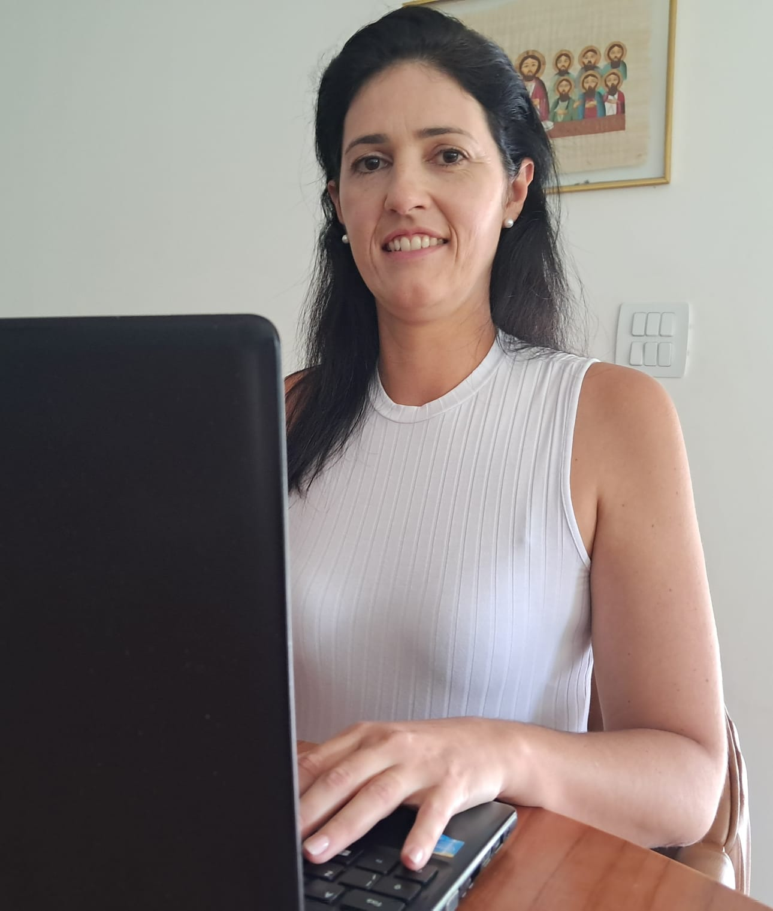

Juliana Diotto de Oliveira
Desenvolvedora Web
Sobre Mim
Maturidade, resiliência e a paixão por aprender:
Minha transição para o Desenvolvimento Web.
Olá! Meu nome é Juliana e sou graduada em Tecnologia em Desenvolvimento Web. Minha trajetória é única: construí uma base profissional sólida de 9 anos no setor cartorário e, logo após, fiz uma pausa na carreira profissional para me dedicar à missão de gerir minha casa e a criação das minhas três filhas.
Essa pausa de 13 anos me trouxe habilidades como: multitarefa, paciência, gestão de crises e uma organização impecável. Com minhas filhas crescendo, decidi que era hora de investir no meu sonho: a tecnologia.
Retornar aos estudos e concluir minha graduação em 2025 foi o maior marco dessa retomada. Hoje, uno a experiência de vida e a seriedade de quem sabe gerir responsabilidades complexas com o conhecimento técnico atualizado em desenvolvimento de software.
O que eu ofereço:
- Formação Técnica: Graduação concluída com domínio em JavaScript, HTML, CSS e SQL.
- Projetos Práticos: Experiência em consumo de APIs e lógica de programação (confira meus projetos abaixo!).
- Perfil Diferenciado: Sou uma profissional que une a energia de quem acabou de se formar com a maturidade de quem sabe a importância do compromisso e da entrega constante.
Estou em busca da minha primeira oportunidade como Desenvolvedora Web Júnior, pronta para aplicar minha dedicação e meu olhar detalhista em projetos que façam a diferença.
Meus Projetos
Jogo - Ponte de Vidro
Desenvolvido com JavaScript Vanilla, este projeto foca na lógica de programação e manipulação do DOM. O jogo desafia o usuário em uma dinâmica de sorte e gerenciamento de estado, utilizando estruturas condicionais e eventos para criar uma experiência interativa.
Previsão do tempo
Aplicação prática de consumo de API REST (OpenWeatherMap). O projeto permite a busca em tempo real de dados climáticos de qualquer cidade, tratando retornos de JSON e atualizando a interface de forma dinâmica com JavaScript.

Site sobre o Android
Projeto focado no domínio de HTML5 e CSS3, explorando conceitos de design responsivo, tipografia e o uso de elementos semânticos. O site narra a evolução do mascote do Android com um layout limpo e adaptável a diferentes telas.